Syntax
Introduction to linguistics
open slides download slides (pdf)
Outline
Syntax and grammar
Sentence grammar
- “Syntax is concerned with the way in which words combine to form larger units such as sentences.
- Although texts or utterances often consist of more than one sentence, it makes sense, for certain purposes of analysis at least, to consider the sentence the largest unit of description.”
(Herbst 2010: 142)
Syntactic hierarchy
- sentence
- clauses
- phrases
- words
- morphemes
- words
- phrases
- clauses
Exercise: splitting into sentences, clauses, phrases, and words
Divide the following into sentences, clauses, phrases, and words:
I gave them some money because they needed it.
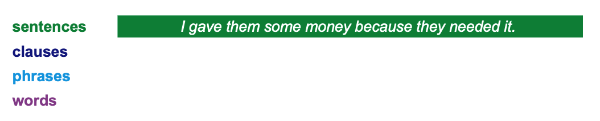
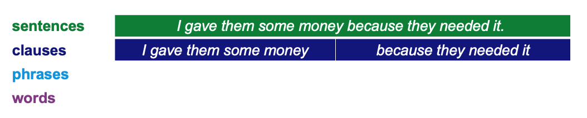
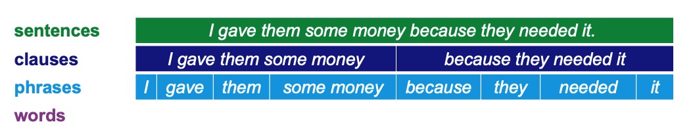
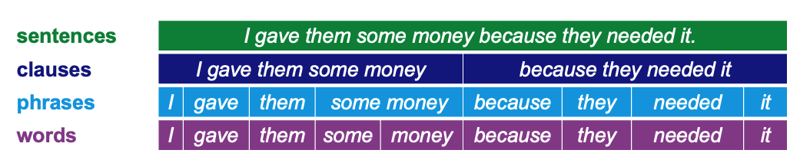
Clauses and sentences
Herbst (2010): 143–144; citing Quirk et al. (1985): 2.11
“[…] the clause is a much more clearly definable unit of linguistic analysis than the sentence.
- A clause can occur as a dependent (or subordinate) clause if it forms a constituent of a larger clause as in
- (2)PW Barbara Hepworth had also begun to work in metal.
- an independent clause if it is not a constituent of a larger clause as in
- (3)PH We shall now watch New York as eagerly as Paris for new developments.
The term sentence will be used
- for a single independent clause that is not co-ordinated with another clause as in (3)
- for a combination of two or more independent clauses in co-ordination as in
- (4)PH It was an October night and a full moon was rising over Godrevy.
Exercise: identifying clauses
Identify all dependent/subordinate and independent/main clauses in the following sentences:
- The cats have been asleep for days.
- I admire their reasoning and I accept their conclusions.
- Although I admire their reasoning, I reject their conclusions.
- Playing the piano is great and I want to be brilliant at it.
- His book stresses the history of styles, which he describes in sequence.
- [The cats have been asleep for days.]cl_main
- [I admire their reasoning]cl_main and [I accept their conclusions]cl_main.
- [[Although I admire their reasoning]cl_sub, I reject their conclusions]cl_main.
- [Playing the piano is great]cl_main and [I want to be brilliant at it]cl_main.
- [His book stresses the history of styles, [which he describes in sequence]cl_sub]cl_main.
Example: full syntactic analysis
His book stresses the history of styles, which he describes in sequence.
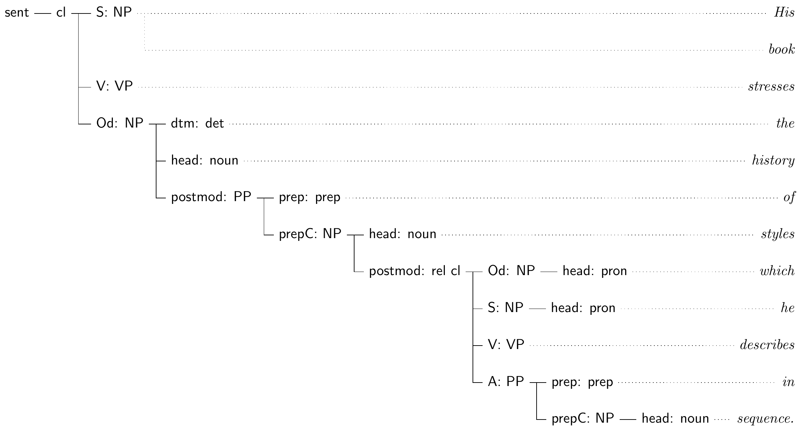
Exercise: identifying finite and non-finite subordinate clauses
Indicate if the subordinate clauses in the following sentences are finite or non-finite:
- Playing the piano is great.
- That we need a new banking settlement is clear.
- Do you want to know whether I’m ‘anti’ or ‘pro’?
- All they wanted was to see them one last time.
- [Playing the piano]cl_sub_nonfin is great.
- [That we need a new banking settlement]cl_sub_nonfin is clear.
- Do you want to know [whether I’m ‘anti’ or ‘pro’]cl_sub_fin?
- [All they wanted]cl_sub_fin was [to see them one last time]cl_sub_nonfin.
The elements of clause structure
Subject, predicate, adjunct
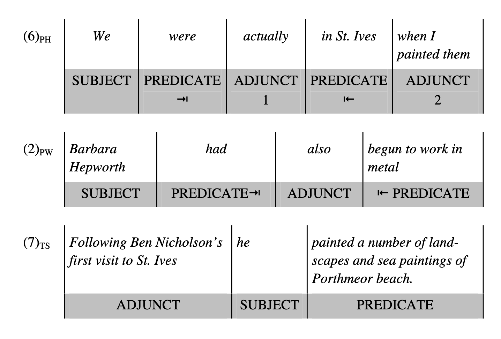
Objects and complements
(Herbst 2010: 149)
“The distinction between objects and complements is made on the basis of two main criteria:
- objects can become the subjects of passive clauses, complements cannot
- complements refer in some way to the subject or object of the clause (hence the distinction between subject complements and object complements), objects do not.”
Form and function
The cats have been asleep for days.
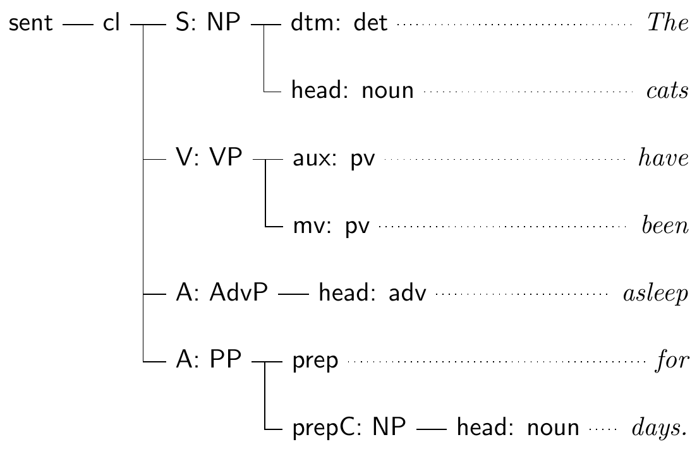
Exercise; identifying the elements of clause structure
Identify the elements of clause structure in the following sentences.
- The driver gave them a free ride.
- They have been reading for a while.
- I might be here again next month.
- Kevin is very afraid of dogs.
- Some people consider them the best band on earth.
- Honestly, I did see him briefly in the park yesterday when he was feeding the ducks.
- The driverS:NP gaveV:VP themOi:NP a free rideOd:NP.
- TheyS:NP have been readingV:VP for a whileA:AdvP.
- IS:NP might beV:VP hereA:AdvP againA:AdvP next monthA:NP.
- KevinS:NP isV:VP very afraid of dogsCs:AdjP.
- Some peopleS:NP considerV:VP themOi:NP the best band on earthOd:NP.
- HonestlyA:Adv, IS:NP did seeV:VP himOd:NP brieflyA:Adv in the parkA:AdvP yesterdayA:AdvP when he was feeding the ducksA:cl_sub_fin.
Clause types
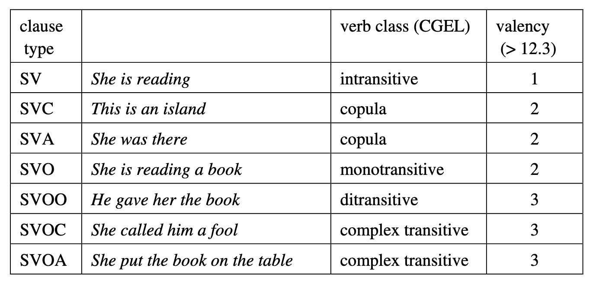
Exercise: matching clause types
Match the following sentences with the correct clause type (CGEL):
- She – was reading.
- We – were – too early.
- We – sent – them – a parcel.
- He – became – the President of the United States.
- I – read – a book.
- I – put – the book – on the shelf.
- We – find – clause patterns – fascinating.
- SV
- SVOd
- SVOiOd
- SVCs
- SVA
- SVOdCo
- SVOdA
- She – was reading.: SV
- We – were – too early.: SVCs
- We – sent – them – a parcel.: SVOiOd
- He – became – the President of the United States.: SVCs
- I – read – a book.: SVOd
- I – put – the book – on the shelf.: SVOdA
- We – find – clause patterns – fascinating.: SVOdOd
Exercise: identifying dependent/subordinate clauses
Underline all dependent/subordinate clauses in the sentences below and determine their syntactic function.
- That cities will attract more and more criminals is a safe prediction.
- This shows how difficult the question must have been.
- Being a farmer, he is suspicious of all governmental interference.
- We knew that he was a lousy driver.
- The problem is who will water my plants when I am away.
- No further discussion arising, the meeting was brought to a close.
- [That cities will attract more and more criminals]cl_sub_fin is a safe prediction.
- This shows [how difficult the question must have been]cl_sub_fin.
- [Being a farmer]cl_sub_nonfin, he is suspicious of all governmental interference.
- We knew [that he was a lousy driver]cl_sub_fin.
- The problem is [who will water my plants when I am away]cl_sub_fin.
- [No further discussion arising]cl_sub_nonfin, the meeting was brought to a close.
Phrases
Noun phrases
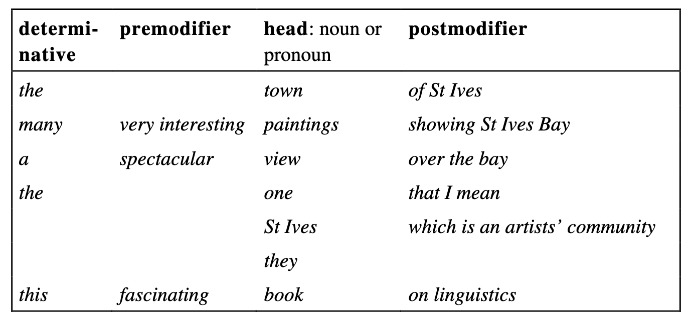
Verb phrases
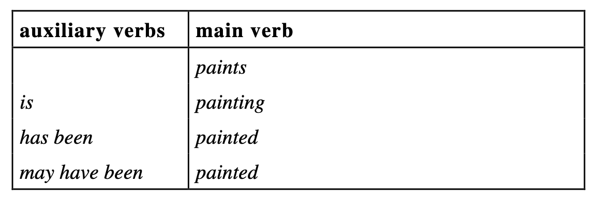
Adjective phrases
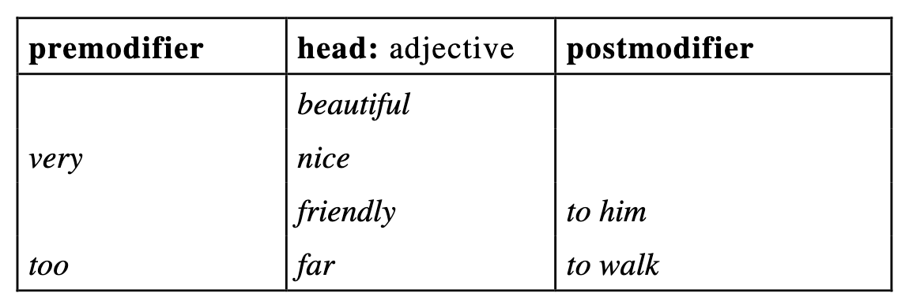
Adverb phrases
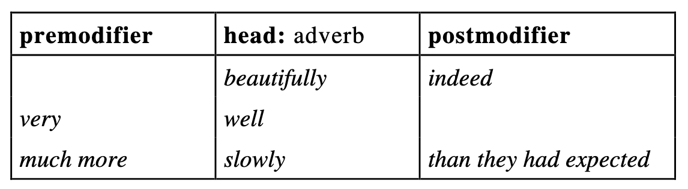
Prepositional phrases
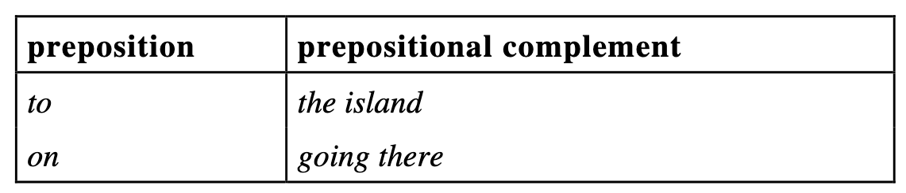
Exercise: identifying noun phrases
Identify all noun phrases in the following sentences.
- The driver gave them a free ride.
- I might be here again next month.
- October arrived, spreading a damp chill over the grounds and into the castle.
- The bassist they had just casted left the next day.
- The driver gave them a free ride.
- I might be here again next month.
- October arrived, spreading a damp chill over the grounds and into the castle.
- The bassist they had just casted left the next day.
Exercise: identifying verb phrases
Identify all verb phrases in the following sentences.
- The driver gave them a free ride.
- I might be here again next month.
- They have been reading for a while.
- The bassist might have been leaving.
- The driver gave them a free ride.
- I might be here again next month.
- They have been reading for a while.
- The bassist might have been leaving.
Exercise: identifying phrase types
Give the term for the formal elements (= phrases) underlined in the following sentences.
- I might be here again next month.
- They left in a rush.
- They did amazingly well.
- The man who came here yesterday was his brother.
- Charlie is very anxious about their health.
- She fell in love with the girl in the dark grey dress.
- I might be here (AdvP) again (AdvP) next month.
- They left in a rush (AdvP).
- They did amazingly well (AdvP).
- The man who came here yesterday (NP) was his brother.
- Charlie is very anxious about their health (AdjP).
- She fell in love with the girl in the dark grey dress (NP).
Word classes
Overview
Exercise: determining word classes
Determine the word class of all the words in the following sentences taken from Harry Potter and the Chamber of Secrets.
October arrived, spreading a damp chill over the grounds and into the castle. Madam Pomfrey, the nurse, was kept busy by a sudden spate of colds among the staff and students. Her […] potion worked instantly, though it left the drinker smoking at the ears for several hours afterward.
Octobern_prop arrivedv_full, spreadingV_full adet dampadj chilln overprep thedet groundsn andconj intoprep thedet castlen. Madam Pomfreyn_prop, the nursen, wasv_prim keptv_full busyadj byprep adet suddenadj spaten ofprep coldsn amongprep thedet staffn andconj studentsn. Herdet […] potionn workedv_full instantlyadv, thoughconj itpron_pers leftv_full the drinkern smokingv_full atprep thedet earsn forprep severaldet hoursn afterwardadv.
Verbs
Verbal inflection
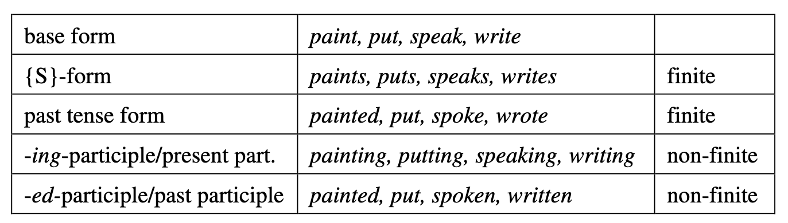
Modal and primary verbs
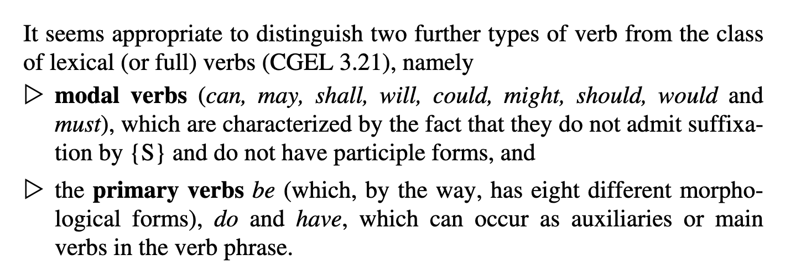
Full syntactic analysis
Give a full syntactic analysis of the following sentences.
He spends all his money on horses.
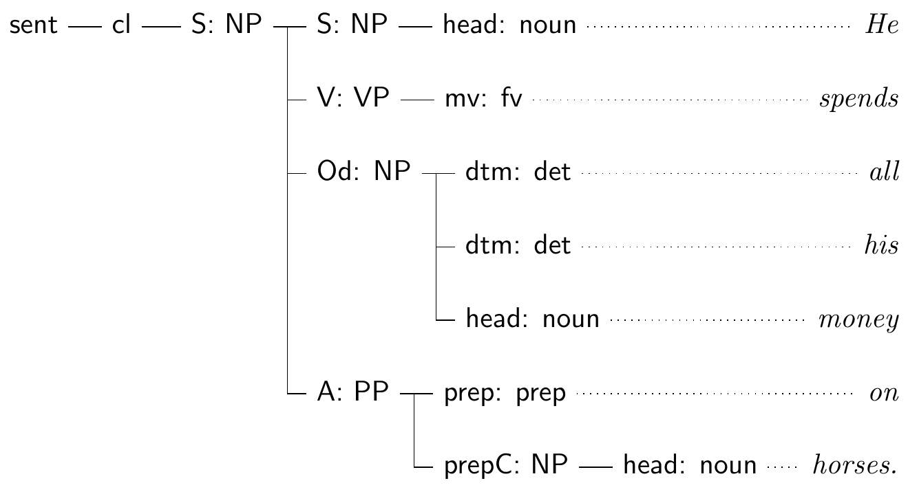
John called me an idiot.
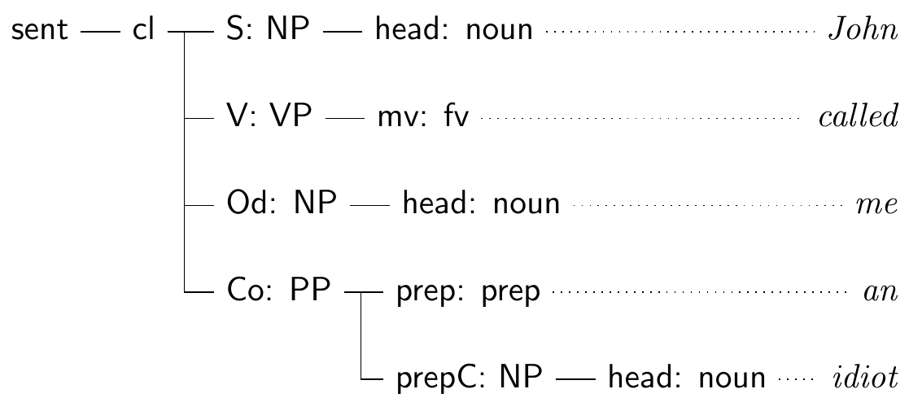
Mary left the next day.
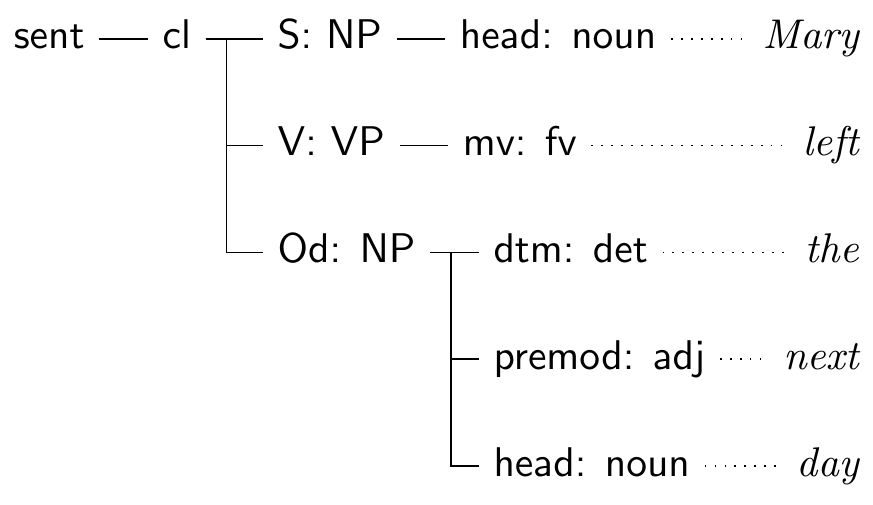
His face turned pale when he saw me.
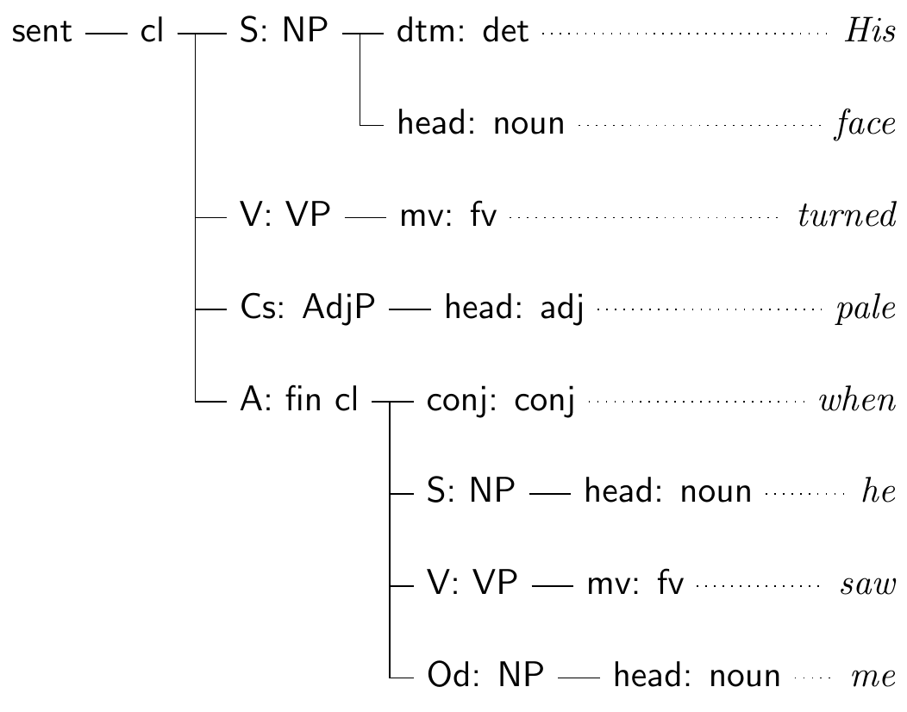
Tom called Jerry at midnight and Tom called Jerry a fool.
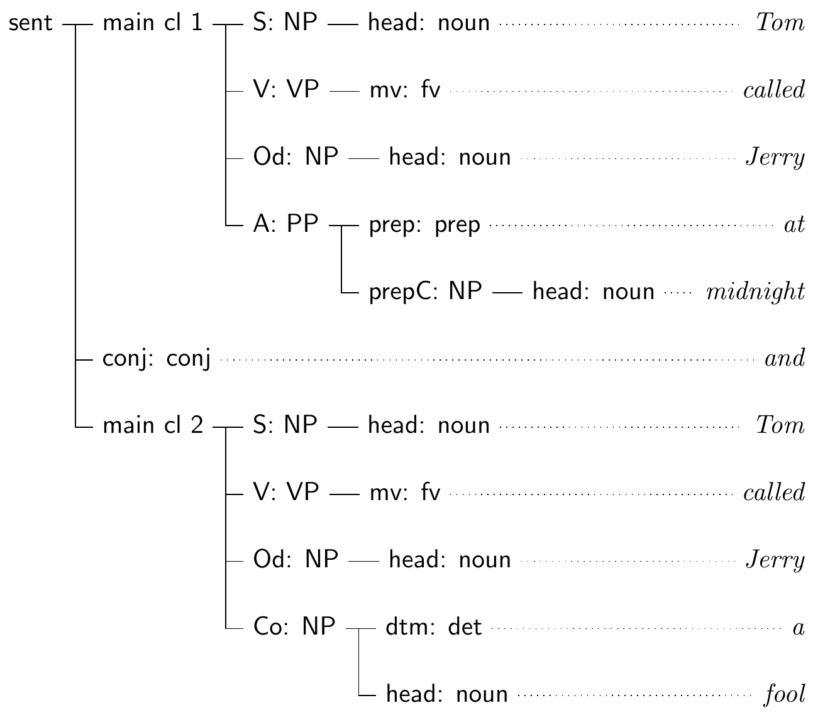
Some people consider themselves to be very important.
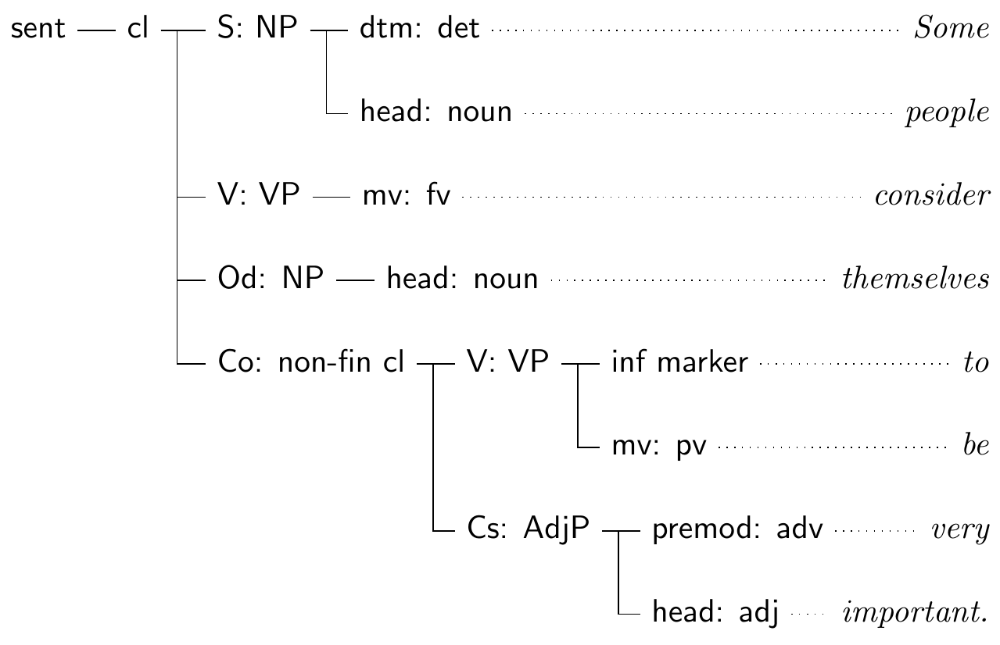
Michael completely ruined the dinner as he behaved like a fool.
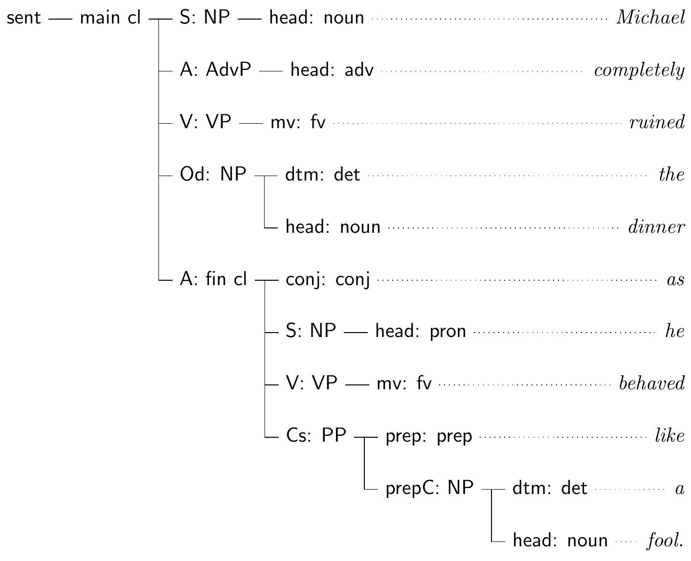
The door of George Lancaster’s house, which was half buried in the snow, screeched.
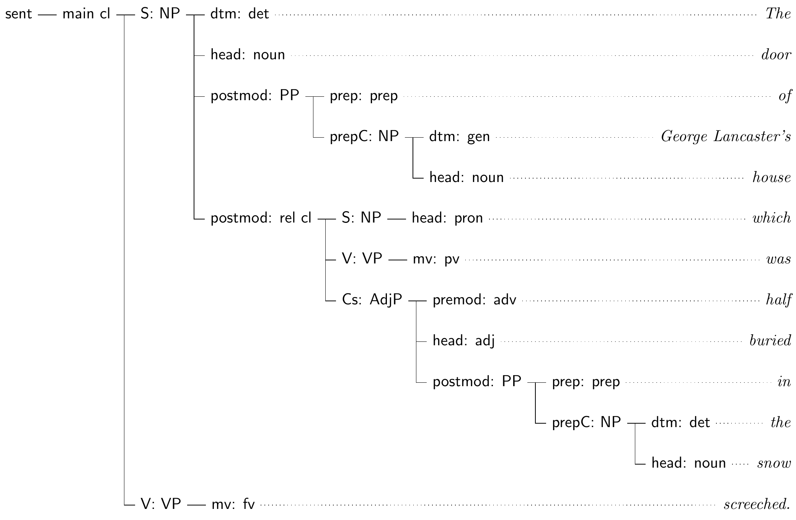
The lucky boys have found a paperback in the park and they opened it carefully.
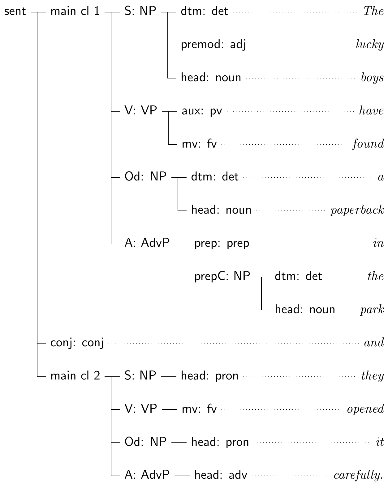
Valency theory and case grammar
Constituency grammar
By 1918 St Ives had a long tradition as an artists’ community.
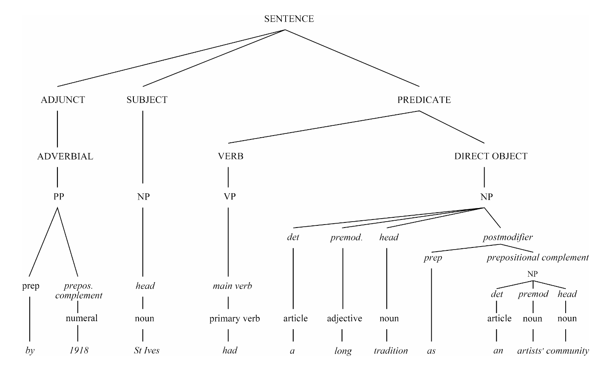
Dependency grammar
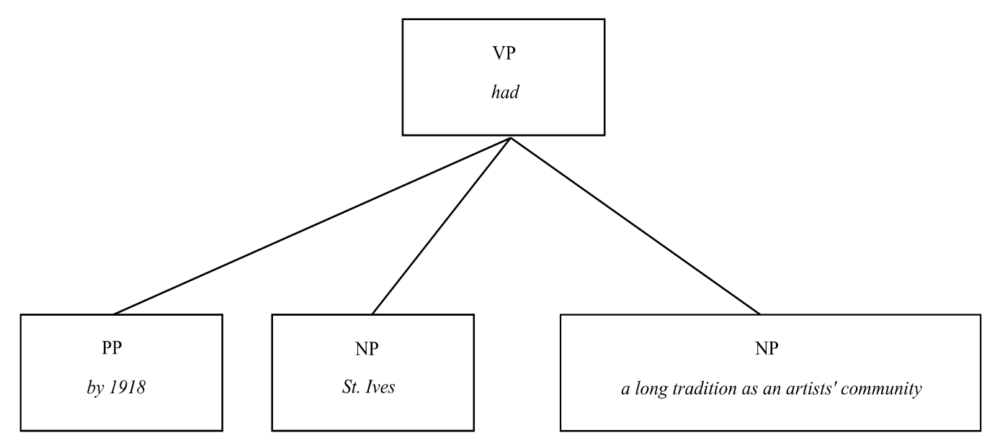
Case grammar and participant roles
Herbst (2010): 180–182
- BENREC: someone or something that benefits from the action expressed by the verb or is the intended recipient of the action described by the verb
- (12)PW It gave Ben a reasonable studio and Barbara one near the kitchen, filled with light.
- ÆFFECTED: something (or someone) that is affected by or is the outcome or result of the action described by the verb
- (15)PH Once there, Heron had immediately started work on a series of small vertical paintings …
- PREDICATIVE: identification, equation, characterization or description (which could be seen as subroles of ‘PREDICATIVE’):
- (19)PH Heron has never been a programmatic artist …
- LOCATIVE: STATIVE:
- (16)PH At Zennor one sees infinite Atlantic …
- LOCATIVE: GOAL:
- (20)PH … Heron moved beyond the rapid summary strokes and washes of the ‘stripe’ and ‘horizon’ paintings towards what he described as a ‘true spontaneity’ …
- LOCATIVE: SOURCE:
- (22)PH … Heron moved beyond the rapid summary strokes and washes of the ‘stripe’ and ‘horizon’ paintings towards what he described as a ‘true spontaneity’ …
- TIME: time of the action described by the verb:
- (21)PH Exactly forty years before D.H. Lawrence had moved into Higher Tregerthen, the tiny group of cottages at the bottom of the hill below Eagles Nest …
- PURPOSE:
- (24)PW In order to realize the subject emotionally and to further his understanding of the composition, Lanyon made use of his practical skills in a number of three-dimensional constructions.
- TOPIC:
- (25)PH Heron had, of course, been thinking and writing about the nature of abstraction since his very first published article in 1945 …
- AGENT: someone that carries out an action:
- (26)PH Heron had, of course, been thinking and writing about the nature of abstraction since his very first published article in 1945 …